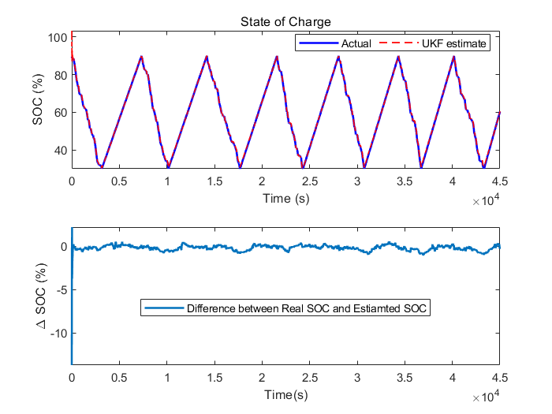

案例9：退化电池系统的非线性状态估计
本案例展示了如何使用无迹卡尔曼滤波方法估计非线性系统的状态。同时，本案例也介绍了为得到更准确的状态估计，如何开发基于事件的卡尔曼滤波方法用于更新模型参数。本案例使用系统识别工具箱和Simscape工具箱
第一步：概述
考虑电池模型如下等效电路

模型包含电压源Em，串联电阻R0，以及RC模块R1和C1。电池在充电和放电循环中交替。本案例中，将使用测量得到的电流、电压和电池问题估计电池模型的SOC。可以将电池假设为非线性系统，可以使用无迹卡尔曼滤波方法估计SOC。电池的容量在每次充放电循环后都将衰退，它也可被当做一个不准确的SOC估计值。可以使用一个基于事件的卡尔曼滤波器，在电池处于充放电转换过程中时，估计得到电池的容量。估计得到的容量可以因此用来指示电池的健康状态
相对应的Simulink模型中包含了三个部件：电池模型、无迹卡尔曼滤波模块和基于事件的卡尔曼滤波模块。以下部分中将会有更详细地介绍

此时，因采样时间Ts未指定，模型中某些模块显示为红。在随后的步骤中将导入mat型参数数据，其中包含Ts
第二步：电池模型
考虑热效应的电池模型将在下面用Simscape语言表示出

电池模型的状态迁移方程如下：
$$
\frac{d}{dt}\left(\begin{matrix}SOC\\
U_1
\end{matrix}\right)=\left(\begin{matrix}
0\\ -\frac{1}{R_1(SOC,T_b)*C_1(SOC,T_b)}U_1
\end{matrix}\right)+\left(\begin{matrix}
-\frac1{3600*C_q} \\
\frac 1 {C_1(SOC,T_b)}
\end{matrix}\right)I+W
$$
此处，R1(SOC,?Tb)和C1(SOC,?Tb)分别为RC模块中热和SOC相关的电阻和电容，U1为穿过电容C1的电压，I为输入的电流，Tb为电池温度，Cq为电池容量（单位：Ah），W为过程噪声
当电池放电时，输入电流为随机生成的脉冲，电池充电时保持恒定，如以下图像所示：

测量方程如下：
E?=?Em(SOC,?Tb)???U1???IR0(SOC,?Tb)?+?V
其中，E为测量得到的输出，R0(SOC，Tb)为串联电阻，Em?=?Em(SOC,?Tb)为电压源的电动势，V为测量噪声
在模型中，R0，R1，C1和Em为依赖于SOC和电池温度的二维查找表。利用实验数据可确定查找表中的参数13
第三步：估计SOC
为使用无迹卡尔曼滤波模块，对应状态和测量方程的Matlab和Simulink函数都需定义。本案例将展示使用Simulink函数。因为无迹卡尔曼滤波器是时间离散的滤波器，因此要先将状态方程离散化。本案例中，使用欧拉离散化。定义采样时间为Ts。对离散非线性系统x??=?f(x,?u)来说，系统可以被离散化为
xT?+?1?=?xT?+?f(xT,?uT)?*?Ts
非线性系统的状态向量为：
$$
x_T = \left(\begin{matrix}SOC_T\\U_{1_T}\end{matrix}\right)
$$
使用欧拉离散化得到以下方程：
$$
\left(\begin{matrix}SOC_{T+1}\\U_{1_{T+1}}\end{matrix}\right)=\left(\begin{matrix}SOC_T\\U_{1_T}\end{matrix}\right)+\left(\begin{matrix}-\frac{1}{3600*C_q}I\\-\frac{1}{R_1(SOC_T,T_b)*C_1(SOC_T,T_b)}U_1+\frac 1 {C_1(SOC_T,T_b)}I\end{matrix}\right)T_s+W_T
$$
batteryStateFcn使用。函数输入x为状态向量，xNext为使用离散状态迁移方程计算得到的下一步状态向量。同时需要定义x和xNext的信号维度和数据类型。本案例中，x和xNext的维度为2，数据类型为double。额外的输入为温度、容量估计值和电流。需注意的是，额外输入是指对状态转移方程的输入，而不是无迹卡尔曼滤波器模块要求的输入

在Simulink中被命名为batteryMeasurementFcn的测量函数展示如下：

上述模块的参数配置如下：
点击模型中的无迹卡尔曼滤波部分并配置以下参数

- 状态转移函数（function in state transition）：
batteryStateFcn
前面定义的实现离散状态转换方程的Simulink函数名
- 过程噪声（process noise）：
Additive，时变协方差为$\left[\begin{matrix}2e-8~~~0\\0~~~ 3e-7\end{matrix}\right]$.Additive模式表示噪声直接被加到最终的信号中
SOC和U1的过程噪声估计基于电池系统的动态特性实现。电池标称容量为30Ah，以平均电流幅值为15A进行充放电循环。因此，一次放电或充电过程的时长为2小时（7200秒），SOC的最大值为100%，U1的最大值大约为4V
每一步SOC和U1的变化分别为$max(\left| dSOC \right|)\approx\frac{100\%}{3600*2}*T_s$，$max(\left|dU_1\right|)\approx\frac{4}{3600*2}*T_s$，Ts为过滤器的采样时间。本案例中Ts被设定为1秒
过程噪声W定义如下：
$$
W=\left[\begin{matrix}(max(\left|dSOC\right|))^2~~~~~~~~~~0\\0~~~~~~~~~~~~~~~(max(\left|dU_1\right|))^2 \end{matrix}
\right]\approx\left[\begin{matrix}2e-8 ~~~~ 0\\0~~~~3e-7\end{matrix}\right]
$$
SOC的初始状态值为100%（电池充满），U1初始值为0，因为此时并不知道U1的任何先验信息
- 初始协方差（initial covariance）：初始协方差显示了最初设想值的可靠性和准确性。假设SOC和U1的最大初始猜测值误差分别是10%和1V，那么此时的协方差便为$\left[\begin{matrix}0.01~~~0\\0~~~~~~~1\end{matrix}\right]$.
- 无迹转换参数（Unscented Transformation Parameters）：该参数的设定基于14
- Alpha：1。决定西格玛点在x附近的分布，设定alpha为1表示分布较广
- Beta：2。用于合并分布的先验知识，beta的标称值为2
- Kappa：0。中等尺度参数，标称值为0
- 测量函数（Function in Measurement）：
batteryMeasurementFcn，先前定义的实现测量函数的Simulink函数名 - 测量噪声（Measurement Noise）：
Additive，定常协方差1e-3。测量噪声基于测量设备的精度得到，用于电池电压测量的电压计误差率大约为1%，而电池电压为4V，计算得max(dEm)?≈?4?*?1%?=?0.04，因此设定V?=?(max(dEm))2?≈?1e???3 - 采样时间（Sample Time）：Ts
第四步：估计电池退化
电池的退化由电容Cq的减小刻画。本案例中，电池容量每次充放电循环下的衰减设定为1 Ah，以展现这一退化效应。因电容的退化率并不能提前获知，此处将电容Cq的方程设定为随机游走问题：
Cqk?+?1?=?Cqk?+?WCq
其中k表示充放电循环的次数，WCq表示过程噪声
电池被设定为当剩余电量为30%时，自动充电；当剩余电量为90%时，切换到放电模式。使用此信息可通过对电池I在充电或放电循环（库伦计数）上的积分得到此时的电池容量
Cq的测量方程为：
$$
C_{q_k}^{Measured}=C_{q_k}+V_{C_q}=\frac{\int_{t_{k-1}}^{t_k}Idt}{(\Delta SOC)_{nominal}}=\frac{\int_{t_{k-1}}^{t_k}Idt}{\left|0.9-0.3\right|}=\frac{\int_{t_{k-1}}^{t_k}Idt}{0.6}
$$
VCq表示测量噪声
电池退化的状态和测量方程可用以下形式的状态空间方程表示：
$$
C_{q_{k+1}}=A_{C_q}C_{q_k}+W_{C_q}\\
C_{q_k}^{Measured}=C_{C_q}C_{q_k}+V_{C_q}
$$
其中，ACq和CCq均为1
对于以上线性系统，可使用卡尔曼滤波器估计电池容量。从线性卡尔曼滤波器中估计得到的Cq将被用来提高SOC的估计。本案例中，基于事件的线性卡尔曼滤波器用来估计Cq。因为Cq通过一次充电或放电循环测得的，线性卡尔曼滤波器只有当充电或放电结束时才被触发使用
设定该模块参数及配置如下：


点击Model Parameters设定被控模型和噪声特性：
- Model source：输入接口
要实施基于事件的卡尔曼滤波器，状态方程只有在事件发生时才被激活。换句话说，状态方程也是基于事件的。对于线性系统xt?+?1?=?Axt?+?But?+?ωt，设定状态方程为：$x_{t+q}= \left\{\begin{matrix}Ax_t+Bu_t+\omega_t,~t=t_{enabled} \\x_t,~t\neq t_{enabled}\end{matrix}\right .$
- A：$\left\{\begin{matrix}A_{C_q},~t=t_{enabled} \\1,~t\neq t_{enabled}\end{matrix}\right .$.本案例中，ACq?=?1，因此A取值恒为1
- C： 1，由公式$C_{q_k}^{Measured}=C_{q_k}+V_{C_q}=\frac{\int_{t_{k-1}}^{t_k}Idt}{0.6}$
- Initial Estimate Source： Dialog，需设定初始状态Initial State x[0]
- Initial states x[0]：30. 为电池容量的标称值（30 Ah）
该量表示过程噪声WCq的协方差，因电池容量的衰退率为一次充放电循环1 Ah，因此设定过程噪声为1
- R： 0.1. 该值为测量噪声VCq的协方差值，假定电池容量的测量误差低于1%，当电池容量为30 Ah时，测量噪声VCq?≈?(0.3)2?≈?0.1
- Sample Time： Ts
点击Option添加输入接口为Enable状态以控制测量更新。该可用接口被用来基于每次充放电的事件更新电池容量估计值，而不是持续更新
注意，将Enable设定为0，并不会禁止使用状态方程进行估计。这也是为什么状态方程也被设定为基于事件触发的原因。通过设定基于事件的卡尔曼滤波模块中的A和Q，当Enable设定为0时，使用状态方程预测将被禁用
第五步：结果
为模拟整个系统，导入电池参数。该文件中包含了诸如Em(SOC,?T),?R0(SOC,?T),?R1(SOC,?T)等电池参数
系统仿真
在每个时间步上，无极卡尔曼滤波器都基于电压的估计值Em估计一个SOC。下面画出真实SOC，估计的SOC，以及他们之间的差
% 同步两个时间序列
[RealSOC, EstimatedSOC] = synchronize(RealSOC, EstimatedSOC, 'intersection');
figure;
subplot(2,1,1)
plot(100*RealSOC,'b','LineWidth',1.5);
hold on
plot(100*EstimatedSOC,'r--','LineWidth',1);
title('State of Charge');
xlabel('Time (s)');
ylabel('SOC (%)');
legend('Actual','UKF estimate','Location','Best','Orientation','horizontal');
axis tight
subplot(2,1,2)
DiffSOC = 100*(RealSOC - EstimatedSOC);
plot(DiffSOC.Time, DiffSOC.Data, 'LineWidth', 1.5);
xlabel('Time(s)');
ylabel('\Delta SOC (%)','Interpreter','Tex');
legend('Difference between Real SOC and Estiamted SOC','Location','Best')
axis tight
在历经初始估计误差后，SOC估计值收敛到真实值。最终的估计误差保持在0.5%范围内。无迹卡尔曼滤波器给出了较为精准的SOC估计值
在每个充放电转化的循环下，先估计电池容量以提升SOC的估计准确度。电池系统输出指示信号会给出电池处于何种过程的信息。指示信号为-1时表示放电，为1时表示充电。在本案例中，指示信号的变化被用来决定何时禁用和启用容量估计的卡尔曼滤波器。下面，我们将容量的真实值和估计值以及其对应的充放电指示信号绘出：
figure;
subplot(2,1,1);
plot(RealCapacity,'b','LineWidth',1.5);
hold on
plot(EstimatedCapacity,'r--','LineWidth',1.5);
xlabel('Time (s)');
ylabel('Capacity (Ah)');
legend('Actual','KF estimate','Location','Best');
subplot(2,1,2);
plot(DischargeChargeIndicator.Time,DischargeChargeIndicator.Data,'b','LineWidth',1.5);
xlabel('Time(s)');
ylabel('Indicator Signal');
通常情况下，卡尔曼滤波器可以用来追踪真实电池容量。在估计得到的电池容量和真是容量之间存在半个周期的延迟。这是因为电池容量退化发生在一次完全充放电过程的结束，而库伦计数器仅给出上一次充电或放电的电池容量测量值
第六步：总结
本案例展示了如何使用Simulink中的无迹卡尔曼滤波器模块进行锂电池的非线性状态估计。另外，同时展示了构建基于事件估计电池容量的卡尔曼滤波器的步骤。新估计得到的电池容量值，被用在无迹卡尔曼滤波器中用来提高SOC的估计准确性